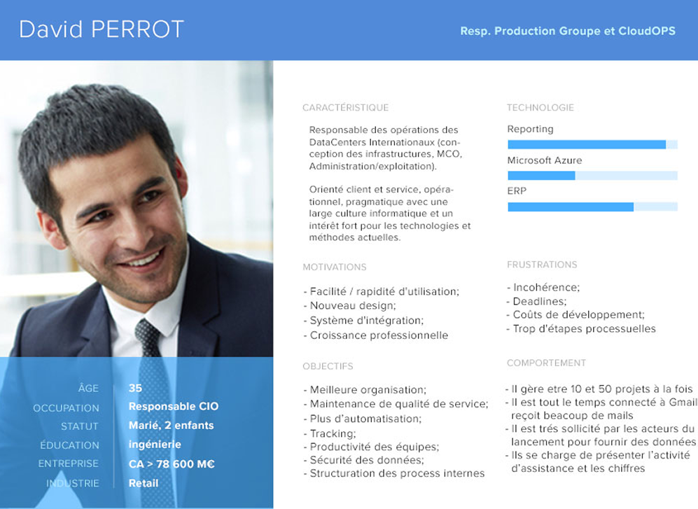

Conception d'une application interne rassemblant l'ensemble des services du groupe (Com'mail, E-Escalation, Reporting, Ressources) pour automatiser, simplifier et centraliser l'activité quotidienne des équipes de support opérationnel.
Contexte
Assembler tous les services du groupe dans une seule application opérationnelle qui permet de gérer l'activité de différents services de la DSI Carrefour : domaine Incident, Problem Management, Supply Marchandises (approvisionnement), Finance RH, etc.
J'ai travaillé dans un environnement agile avec des profils variés (développeurs, DevOps, designers graphiques/produit), en maîtrisant la suite Adobe, Figma, XD, Sketch et Invision, et les outils de gestion de projet Trello, Mural et Jira. Nous avons finalement livré une application portail donnant accès à 4 modules distincts : Reporting, Com'Mail, E-Escalation et Ressources.
Mon rôle
Charte identitaire complète incluant le logo OSP (avec une petite animation) et les éléments graphiques (boutons, iconographie, templates de parcours).
Entretiens avec des experts solutions et utilisateurs potentiels (DevOps, ingénieurs infra, responsables) pour comprendre leur métier et leurs outils, puis questionnaire auprès d'une trentaine de personnes sur leurs attentes et frustrations. Des Guerilla Tests sur l'ancienne version ont révélé un fort bruit visuel et des fonctionnalités manquantes : le projet a été repensé from scratch.
Ateliers d'idéation, dont le Crazy 8, permettant à une équipe multinationale d'exprimer sa vision des futurs écrans à travers des sketchs — une base directe pour les premiers wireframes.
Identifier quelle version d'une interface s'adapte le mieux à l'usage et aux besoins du client.
Tester en mode Guerilla les prototypes auprès des utilisateurs cibles et itérer.
Maquettage sur Balsamiq, prototypage sur Adobe XD.
Réalisation
Outil de mise en forme rapide pour la diffusion de communications d'alerte (déménagement, interruption programmée de service, etc.). Il normalise la mise en page et les chaînes de diffusion afin de réduire le temps de transmission des alertes à quelques secondes.
Un questionnaire a été envoyé sous Google Form aux utilisateurs pour comprendre leurs attentes et préférences concernant le fonctionnement de la future application.

Apporte une vue des compétences d'équipe, facilite les complémentarités et aide à gérer le turnover et les absences. Permet aussi de trouver des employés-spécialistes selon leurs compétences (ex. MySQL, Angular, chinois) en cas de besoin. Confrontée à l'interdiction de diffuser des données confidentielles sur les collaborateurs, l'équipe a réorienté le module pour valoriser les activités, services et réalisations du périmètre plutôt que des données individuelles.
Outil servant à remonter les informations critiques d'un serveur ou d'un datacenter incidenté aux personnes adéquates, avec le détail du serveur impacté (marque, modèle) et du domaine concerné, afin de régler la situation le plus rapidement possible.
Résultat
Une application interne unifiant les services de support opérationnel du groupe : meilleure organisation, structuration des process internes, automatisation accrue, sécurité des données et gain de temps pour des équipes plus productives.